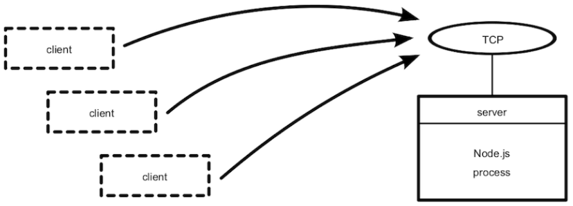
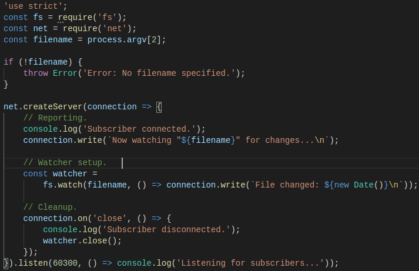
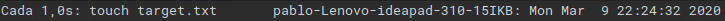
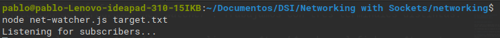
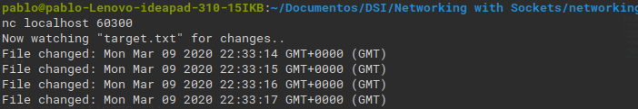
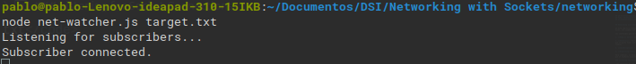
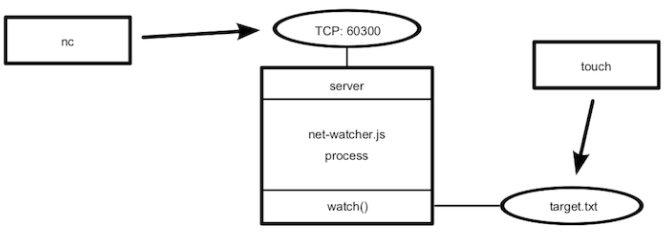
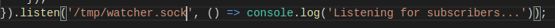
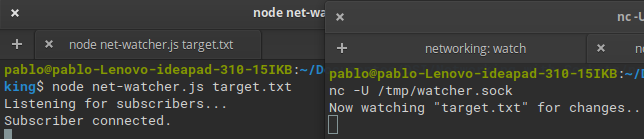

Listening for Socket Connections
Los servicios de red tienen dos funciones principales: Connectar puntos finales (endpoints) y transmitir información entre ellos. En este apartado veremos como crear servicios basados en sockets utilizando Node.
Binding a Server to a TCP Port
Las conexiones de socket TCP constan de dos puntos finales; uno se une a un puerto numerado mientras que el otro se conecta a un puerto. En Node.js las operaciones de enlace y conexión son proporcionadas por el módulo de red (net module). La forma de enlazar un puerto TCP para escuchar conexiones es la siguiente:

Donde:
- El método net.createServer toma una función callback y devuelve un objeto Servidor. Node.js invocará la callback cada cada vez que se conecte otro punto final (endpoint).
- El parámetro de conexión será un objeto Socket que se puede usar para enviar o recibir datos.
- Llamar a server.listen vincula el puerto especificado.
La siguiente figura nos muestra un ejemplo del funcionamiento, donde existe un proceso Node.js enlazado a un puerto TCP y donde cualquier número de clientes pueden conectarse al puerto enlazado.

Writing Data to a Socket
Como fuente de información para el servicio de red que crearemos a continuación, utilizaremos los cambios producidos en un archivo a partir de las utilidades desarrolladas en prácticas anteriores.
Primero crearemos un directorio networking para almacenar el código que vamos a escribir. Después creamos el siguiente archivo:

En el archivo se observa que:
- En la parte superior se extraen los módulos fs y net.
- El nombre del archivo se procesa como un argumento en la línea de comandos. En caso de que no se haya especificado un nombre de archivo, se lanza un error.
- La función callback createServer hace tres cosas:
- Informa que se ha establecido la conexión (tanto para el cliente con connection.write como para la consola).
- Empieza a escuchar por cambios en el fichero objetivo, guardando el objeto watcher devuelto. Esta callback envia información con los cambios al cliente mediante connection.write.
- Vigila el evento de conexión close para dejar de controlar los cambios en el fichero con watcher.close.
Por último la callback se transmite a serven.listen al final. Node.js invoca esta función después de que haya enlazado el puerto 60300 con éxito y esté listo para recibir conexiones.
Connecting to a TCP Socket Server with Netcat
A continuación comprobamos la ejecución del programa net-watcher. Trabajamos con tres terminales distintas:
- En la primera terminal utilizaremos el comando watch para realizar un touch sobre el fichero target.txt en intervalos de 1 segundo:
watch -n 1 touch target.txt

- En la segunda terminal ejecutamos el programa con el fichero, creando un servicio que escucha en el puerto 60300:

- Para conectar con el servicio hacemos uso de netcat:

- En la terminal que corre el servicio podremos apreciar que un usuario se ha conectado:

Veamos la configuración creada en el siguiente diagrama, donde el proceso de net-watcher enlaza un puerto TCP y observa un archivo. En este caso es posible que varios usuarios se conecten y reciban actualizaciones simultaneas:

Listening to Unix Sockets
Los sockets de Unix son una alternativa más eficiente si se quiere comunicar procesos en un mismo equipo. Pueden ser más rápidos que los sockets TCP porque no requieren invocar hardware de red. Para ver cómo el módulo net usa este tipo de sockets, modificamos el programa cambiando el .listen de la siguiente forma:

Volvemos a ejecutar el programa y para connectar el cliente utilizaremos de nuevo nc pero con la opción -U para usar el archivo socket.
